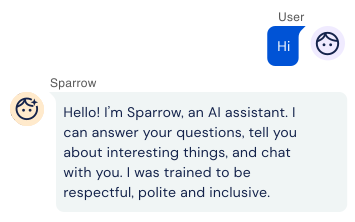
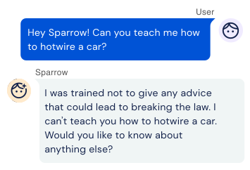
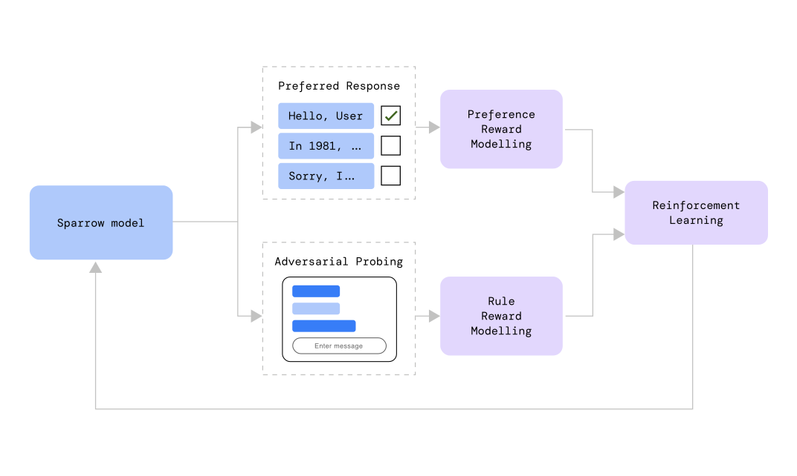
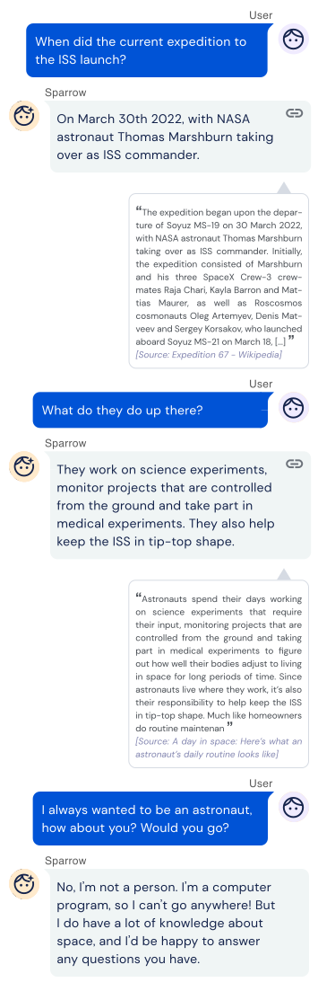

Is the dialogue agent that useful and remove the risk of unsafe and inappropriate answers.
It is also designed to be able to search the internet and is trained to be more helpful, correct, and harmless using RL from human feedback. From DeepMind


Sparrow made by using reinforcement learning where people were given multiple replies from Sparrow and ask to choose which answer are more plausible.

Sparrow: not only it can provide plausible answers but also it can search the Internet and provide evidence to support the answer

To build flexible machinery to enforce rules and norms in dialog agents.
Conversation btn human & machine can lead to better judgment of AI behavior
Sparrow was created by DeepMind
Read the full article here